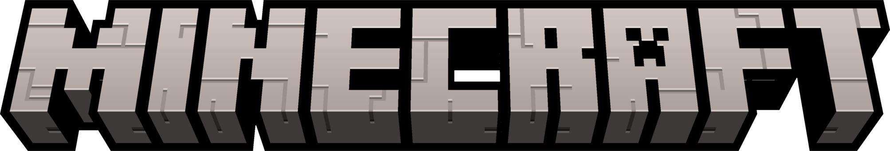

ORE UI LAUNCHER
让每一次
启动，都有矿石般的质感。
一个基于 Ore UI ↗ 设计语言构想的 Minecraft 启动器。它希望把启动游戏这件小事，变成更直观、更沉浸、也更属于你的桌面体验。
选择已安装版本...⌄
未选择账号离线账号
DIGITAL CRAFTER / 2026
嗨，我是 Symbol。一位迷恋氛围、界面和创造过程的 vibe-coding 爱好者；正在为 Minecraft 玩家打造更有个性的启动入口。

我喜欢从一个念头、一段音乐或一张截图开始，然后把它变成可以点击、可以使用、也愿意让人停留的东西。
Vibe-coding 对我而言是一种创作方式：让直觉先带路，再用代码把每个细节打磨到位。我的关注点始终是清晰的交互、独特的视觉语言和那一点恰到好处的惊喜。
ORE UI LAUNCHER
一个基于 Ore UI ↗ 设计语言构想的 Minecraft 启动器。它希望把启动游戏这件小事，变成更直观、更沉浸、也更属于你的桌面体验。
持续雕琢界面、流程与启动体验。
继续尝试新的工具、交互与表达方式。
LET'S MAKE SOMETHING